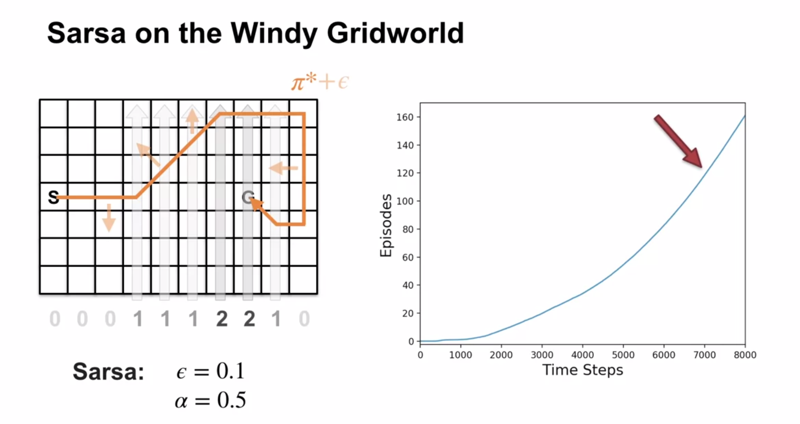

Module 3: Temporal Difference Learning Methods for Control
Lesson 1: TD for Control
Lesson Learning Goals
Generalized Policy Iteration with TD
we would like now to combine TD with a planning algorithm to use TD for control. We This will be a GPI algorithm.
Generalized Policy Iteration - Recap
lets recap the Generalized Policy Iteration (GPI) algorithm:
- Policy Evaluation: Update the value function V to be closer to the true value function of the current policy
- Policy Improvement: Improve the policy \pi based on the current value function V
- Generalized Policy Iteration: Repeated steps of policy evaluation and policy improvement
- GPI does not require full evaluation of the value function, just an improvement can be used to update the policy.
- policy iteration
- run policy evaluation to convergence
- greedifing the policy
- GPI MC
- each episode:
- policy evaluation (nota full evaluation)
- improvement per episode
- each episode:
- GPI TD
- each step:
- policy evaluation (for just one action)
- improvement pi after the single time step.
- each step:
Recall how in the first course we saw DP methods for solving MDPs using the four part dynamic function and its variants. We used the Bellman equation to write down a system of linear equations for the value function and solve them exactly. We then used the value function to find the optimal policy. So in DP we don’t need to interact with the environment or to learn. We can compute the value function and the optimal policy exactly.
In these course we relaxed the assumption of knowing the transition dynamics or the expected returns. This creates a new challange of learning V or Q from experience.
In the first lesson we saw how MC methods can help us learn the value function but with the caveat that we need to wait until the end of the episode to update the value function.
However we have now seen how the TD(0) algorithm uses recursive nature of the Bellman equation for the value function to make approximate updates to the value function. This allows us to learn Values of states directly from experience.
Once we are able to approximate the value function, we can use it to create new generalized policy iteration algorithms. This part of the GPI remains the same, we still evaluate the policy and improve it. But now we can do this in an online fashion, updating the value function after each step.
In SARSA we are making updates to the policy after a single step - this may lead to much faster convergence to the optimal policy. It also allows us to improve our plans during an episode or in a continuing task.
The advantage of TD methods is that they can be used in continuing tasks, where the agent interacts with the environment indefinitely. This is because the value function is updated after each step, and the agent can continue to learn and improve its policy as it interacts with the environment. But this advantage is better understood by considering the episodic tasks, where the agent can learn during an episode that consequences of its actions are sub optimal. This allows TD(0) based GPI to make more frequent updates to the policy within one episode.
Sarsa: On-policy TD Control
Next we consider how we can derive and use a similar approximate updating of the action-value function to learn the action-value function directly from experience.
lets recap the Bellman equation for the action-value function:
\begin{aligned} q_\pi(s,a) & \dot = \mathbb{E}_\pi[G_t | S_t = s, A_t = a] \qquad \newline & = \sum_{s', r} p(s', r | s, a) [r + \gamma \sum_{a'}\pi(a' \mid s') q_\pi(s', a')] \qquad \end{aligned} \tag{1}
We can now use the same idea of bootstrapping to update the action-value function after each step. This is basis of Sarsa algorithm.
Q(S_t, A_t) \leftarrow Q(S_t, A_t) + \alpha [R_{t+1} + \gamma Q(S_{t+1}, A_{t+1}) - Q(S_t, A_t)] \tag{2}
The SARSA algorithm is due to Rummery, Gavin Adrian, and Mahesan Niranjan. The name Sarsa is due to Rich Sutton and comes from the fact that the algorithm uses the tuple (S_t, A_t, R_{t+1}, S_{t+1}, A_{t+1}) to update the action-value function. [@Rummery1994OnlineQU]
SARSA is a sample-based algorithm to solve the Bellman equation for action-values. - It picks an action based on the current policy and then - It policy evaluation by a TD updates of Q the action-value function based on the reward and the next action. - Then it does a policy improvement.
SARSA in an Example MDP

In this grid world isn’t a good fit for MC methods as most policies never terminate. This is because the agent is pushed up by the wind and has to learn to navigate to the goal. Anyhow if the episode never terminates MC wont be able to update the value function.
But Sarsa can learn the optimal policy in this environment by abandoning the epsilon greedy policy in mid episode and finding better policies. We can see that early episodes take longer to terminate after the e-greedy policy stops peaks.
Performance of Learning Algorithms in an MDP
On the right side of the figure we see the performance of the learning algorithms in the windy grid world. We see that in this chart the Sarsa algorithm learns the optimal policy at Around step 7000 where the gradient becomes constant.
Q. why is SARSA called an on-policy algorithm?
this is because it learns by sampling from the policy induced by Q while following the same policy \pi.
Lesson 2: Off-policy TD Control: Q-learning
Lesson Learning Goals
lets recap the Bellman optimality equation for the action-value function:
\begin{aligned} q_{\star}(s,a) = \sum_{s', r} p(s', r | s, a) [r + \gamma \max_{a'} q_{\star}(s', a')] \end{aligned} \tag{3}
The following is an update rule for Q-learning:
We can now use the same idea of bootstrapping to update the action-value function after each step. This is basis of Sarsa algorithm.
Q(S_t, A_t) \leftarrow Q(S_t, A_t) + \alpha [R_{t+1} + \gamma \max_a Q(S_{t+1}, a') - Q(S_t, A_t)] \tag{4}
Note: I made some cosmetic changes to the psuedo code in the book to resolve the confusion I had about nature the behavioral policy.
Q-learning has a subtle issue I found confusing at first.
Here I first state the issue:
What is the behavioral policy we follow in these three td-learning algorithms when we sample the next action to follow?
We are not writing here that Q function is Q_\pi but the value functions are by definitions expectations under some policy. In these algorithms we keep updating the Q function using TD(0) updates. If we update the Q function in a sense that the best action changes at a given step then the updated function now uses a new policy. (In the case of Sarsa we can actually get a worse policy after the update.) I figured this out very quickly.
A fully specified Q-functions isn’t just defined by following a policy. It also induces a policy. This in generaly is a stochastic policy. But if we take the greedy action with arbitrary tie breaks we get one or more deterministic policies. So it seems that off policy algorithms like Q-learning and Expected Sarsa are following a sequence of policies that are induced by the Q function that is being learned.
In general off policy learning may be using S,A,R sequences that have been sampled like we clearly did in MC. So the question which arises is can sample from any ergodic policy as our behavioral policy in these off-policy algorithms or are we supposed to learn from experience and sample using the policy induced by latest and greatest Q function that we are learning?
Luckily Martha White is very clear about this:
- The target policy is the easy part - we are targeting Q_{\pi_\star}.
- The behavior policy is the policy can be any policy so long as it is ergodic.
- Using an \epsilon-greedy policy derived from Q is very logical choice but we could use any other policy.
- Is Q-learning guaranteed to converge ?
- The course glossed over this in lectures perhaps referencing the text book – I will have to go back and check this.
- However as this is introductory CS and not Mathematics I will try to suspend my disbelief that the algs are guarenteed to converge and return to the point.
- It is an off-policy algorithm.
- The target policy is the easy part - we are targeting Q_{\pi_\star}.
- The behavior policy is the policy that we are following but what is that ?
- it is clearly not Q_{\pi_\star} as we don’t know it yet.
- we initialized Q(s,a) arbitrarily - so we may have a uniform random policy.
- bu we actual have any random policy.
- any action that is a legit transition from the current state is a valid action.
- so long as their probabilities add up to 1.
- later Martha keeps saying that we need the ergodicity of the MDP to ensure that out policy will visit all states and actions with non-zero probability.
- this anyhow is one source of confusion.
- however an epsilon greedy policy of the induced policy from Q seems like a very good choice. Can we do better ?
- another point to consider here is that this is a value iteration algorithm.
- what can we say about the inermediate Q functions that we are learning ?
- are they even a valid action value function ?
- is the policy they induce a coherent probability distribution over actions ?
- When we select the action A’ what policy are we using ?
we are clearly not using the policy that we are learning \pi_\star - we dont know it yet.
we are could use an \epsilon-greedy policy by greedifying Q. this seems the most logical
but we could pretty much use any other policy.
this is because Q-learning is an off-policy algorithm.
the confusion arises because it is not clear what “any policy derived from Q” means in the algorithm.
q-learning
- is a value iteration algorithm
- uses the Bellman optimality equation to update the action-value function.
- selects the action based on greedyfing the current q-values and then
it policy evaluation by a TD updates of Q the action-value function based on the reward and the next action.
q-learning learns the optimal policy but follows a some other policy. Let suppose the optimal policy is deterministic. And let’s suppose that the behavior policy is epsilon greedy based on that.
The alg does not follow the optimal policy - it follows the behavior policy and this will perform much worse because of exploration.
If we need to account for the consequences of exploration in the policy we need to use a different algorithm!
Q-learning in an Example MDP
In this grid world isn’t a good fit for MC methods as most policies never terminate.
Q-learning can learn the optimal policy in this environment by abandoning the epsilon greedy policy in mid episode and finding better policies.
We can see that early episodes take longer to terminate after the e-greedy policy stops peaks.
However Q-learning does not take seem to factor in the consequences of exploration in its policy.
This is because it is learning the optimal policy and not the policy that it follows.
Q-learning does not need Importance sampling to learn off-policy. This is because it is learning action values.
Comparing Sarsa and Q-learning
Q-learning is an off-policy algorithm:
- the target policy is the optimal policy since the update rule approximates the Bellman optimality equation.
- the behavior policy is initially given updated at each step from the inital get updated a bit towards the optimal policy at each step.
because it is learning \pi_* (the optimal policy) but it samples a different policy.
This is in contrast to Sarsa, which is an on-policy algorithm because it learns the policy that it follows.
Lesson 3: Expected SARSA
Lesson Learning Goals
\begin{aligned} Q(S_t, A_t) & \leftarrow Q(S_t, A_t) + \alpha [R_{t+1} + \gamma \mathbb{E}[Q(S_{t+1}, A_{t+1})] - Q(S_t, A_t)] \newline & \leftarrow Q(S_t, A_t) + \alpha [R_{t+1} + \gamma \sum_a \pi(a|S_{t+1}) \cdot Q(S_{t+1}, a) - Q(S_t, A_t)] \end{aligned}
Understanding Expected Sarsa
lets recap the Bellman equation for the action-value function:
\begin{aligned} q_\pi(s,a) & \dot = \mathbb{E}_\pi[G_t | S_t = s, A_t = a] \qquad \newline & = \sum_{s', r} p(s', r | s, a) [r + \gamma \sum_{a'}\pi(a' \mid s') q_\pi(s', a')] \qquad \end{aligned} \tag{5}
We can now use the same idea of bootstrapping to update the action-value function after each step. This is basis of Sarsa algorithm.
in the sarsa update rule:
Q(S_t, A_t) \leftarrow Q(S_t, A_t) + \alpha [R_{t+1} + \gamma Q(S_{t+1}, A_{t+1}) - Q(S_t, A_t)] \tag{6}
we knows the policy \pi so we can make a better update by replacing the sampled next action with the expected value of the next action under the policy \pi.
This is the basis of Expected Sarsa.
which uses the update rule:
Q(S_t, A_t) \leftarrow Q(S_t, A_t) + \alpha [R_{t+1} + \gamma \sum_a \pi(a|S_{t+1}) \cdot Q(S_{t+1}, a) - Q(S_t, A_t)] \tag{7}
Otherwise the algorithm is the same as Sarsa.
- This target is more stable than the Sarsa target because it is less noisy.
- This makes it converge faster than Sarsa.
this has a has a down side - it has more computation than Sarsa due to avaraging over many actions for every step.
- Expected Sarsa is a generalization of Q-learning and Sarsa.
- There are many RL algorithms in our specialization flowchart.
- We would like to find a few or even one algorithm that may be widely applicable to many different settings, carrying over the insights we learned from each new algorithm.
- The first step in this direction was introducing the epsilon parameter to the bandit algorithms, which allowed us to treat the exploration-exploitation trade-off. We have seen additional strategies for exploration but we have been using either an \epsilon-greedy strategy or a epsilon-soft strategy in most algorithms.
- We also got the powerful idea of using confidence intervals as tie breakers in the case of multiple actions with the same expected reward.
- Another step in this direction was to introduce discounting of rewards which let us parameter discounting with \gamma and thus treat episodic and continuing tasks in the same way.
- The MC algorithms showed that this is not enough to fully generalize to episodic and continuing tasks. However we got a powerful new ideas of inverse sampling and doubly robust estimators. For use with off-policy learning.
- Next we introduced GPI in which we combined policy evaluation and policy improvement algorithms to iteratively approximate the optimal policy in a single algorithm.
- Another lesson was to using the TD error to bootstrap the value function. This let us update value functions after each step, rather than waiting until the end of the episode, increasing the data efficiency of the algorithms.
- We also saw that we can use this idea with action-value functions, which is more fine grained than the value function and can lead to more efficient learning.
- Next we saw that Expected Sarsa is one such algorithm that can be used in many different settings.
- It can be used in episodic and continuing tasks,
- It can be used for on-policy and off-policy learning.
- It is a GPI algorithm that uses the TD error to update the action-value function. And it the \epsilon-greedy strategy implicit in its action-value function.